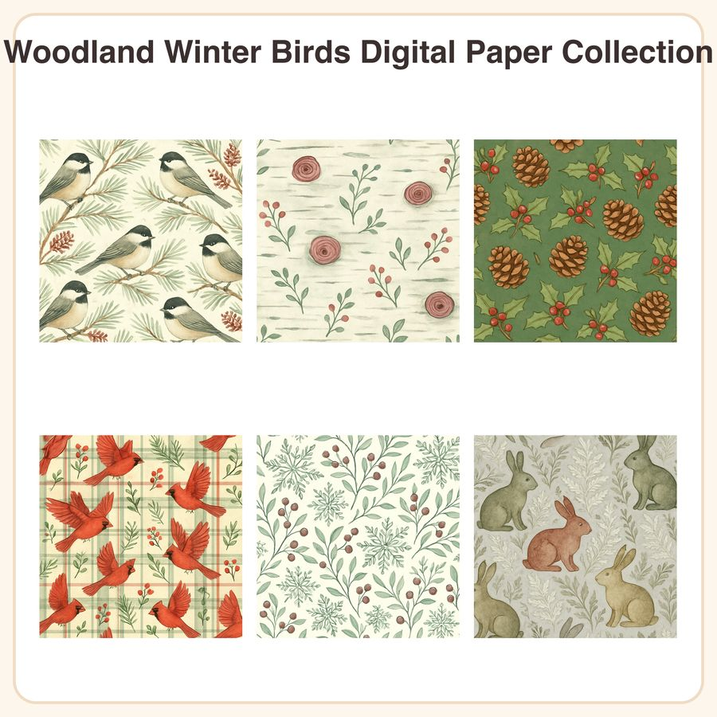

$4.99
View on EtsyBring cozy woodland charm to your winter projects with this collection of 6 seamless watercolor-style patterns featuring chickadees, cardinals, birch bark, pinecones, and frosted rabbits. What's included: • 6 seamless patterns, each as a 3072x3072px JPEG (12x12in @ 256dpi) • 6 matching repeatable PNG tiles for easy scaling and continuous patterns • Designs: Chickadees on snowy pine branches, Birch bark with painted knots, Pinecones & holly on sage, Cardinals over cranberry plaid, Snowflakes & juniper lattice, Rabbit silhouettes among frosted ferns Style: Soft watercolor illustration with fine ink outlines, in a muted forest palette of sage, cranberry, and birch cream — folk-inspired nature motifs in true seamless tile repeat. How to use: Open files in any program that supports JPEG/PNG (Photoshop, Procreate, Canva, Cricut Design Space, etc.). Use as-is for backgrounds, or tile the PNGs to fill larger surfaces for gift wrap, packaging, cards, scrapbook pages, or digital branding. License: For personal use and small business commercial use (up to 500 finished units per design). Reselling, sharing, or redistributing the digital files themselves is not permitted. Honest note: These patterns were designed in our shop with the help of AI tools as part of our creative process. Instant download — no physical item will be shipped. Files delivered as a zip folder immediately after purchase.